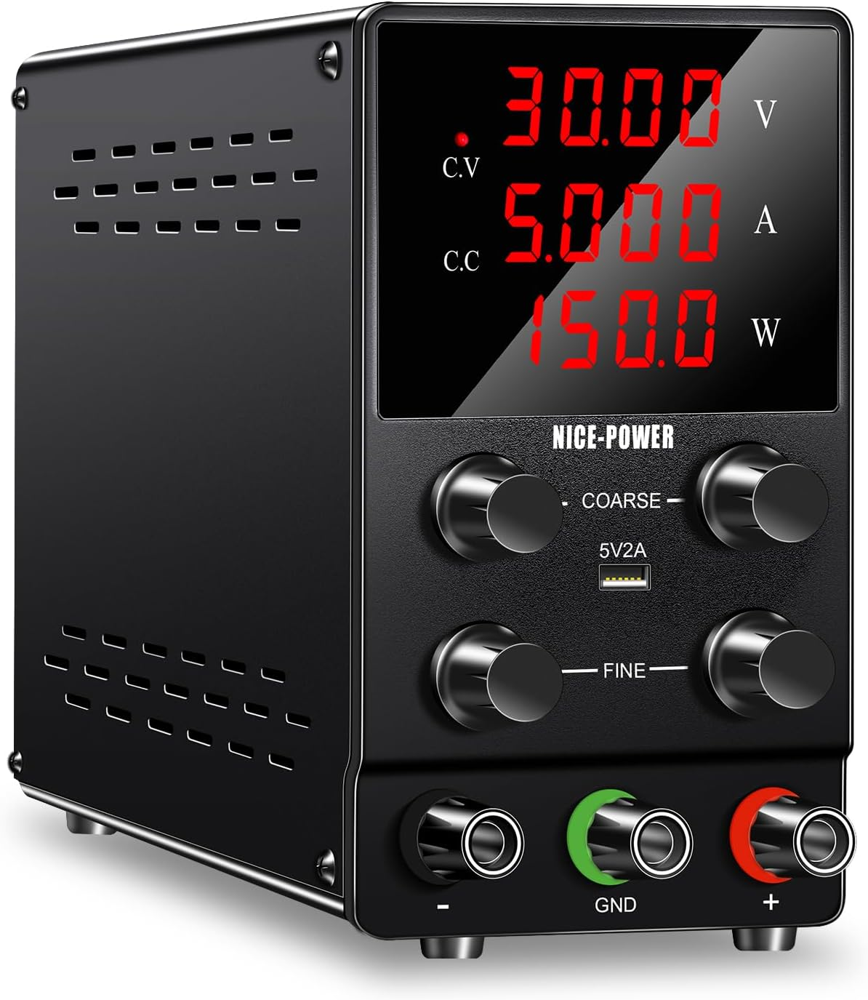

Options pour un laboratoire d'électronique personnel
Table des matières
1. Catégories d'expériences
1.1. Analogiques
Dans ce type d'expériences, les signaux assument typiquement des valeurs qui peuvent varier de façon continue sur une gamme déterminée par la tension d'alimentation. Les variations temporelles des signaux sont pertinentes. On pourra s'intéresser aux formes d'ondes observées, aux valeur maximales et minimales, aux durées et périodes des signaux. On mesure généralement un petit nombre de signaux, par exemple, une entrée et une sortie.
1.2. Numériques
Dans les expériences numériques, les signaux assument des valeurs discrètes dont les niveaux sont définis par le ou les standards de niveaux logiques en vigueur. On s'intéresse aux niveau logiques observés et à leurs variations temporelles. Les délais entre des changements aux entrées et leurs répercussions sur les sorties sont aussi pertinents. On doit souvent mesurer en parallèle un nombre important de signaux.
Dans le cas d'expériences avec des systèmes séquentiels, un signal d'horloge est souvent utilisé comme référence temporelle. La vitesse de commutation, déterminée par la fréquence d'horloge, peut présenter un défi pour les approches de prototypage et les instruments de mesure.
1.3. Mixtes
Les expériences avec des systèmes mixtes combinent les caractéristiques des expériences analogiques et numériques. On aura possiblement des conversions du domaine analogique vers le domaine numérique et vice versa.
2. Principales fonctions
Les fonctions sont présentées ici dans un ordre qui correspond dans les grandes lignes à leurs priorités. Il faut en effet pouvoir monter un système électronique, l'alimenter ensuite, mesurer ses paramètres et lui acheminer des signaux pour pouvoir enfin valider son fonctionnement.
2.1. Prototypage
Le prototypage consiste à implémenter un circuit sur un banc d'essai de façon à pouvoir le tester. L'implémentation doit permettre d'avoir accès en différents points du circuit pour pouvoir faire des mesures ou injecter des signaux de test.
2.1.1. Plaquette d'essai sans soudure (Breadboard)
Pour une implémentation temporaire, on utilise typiquement une plaquette d'essai sans soudure, dans laquelle les différents pièces et fils sont enfichés.
2.1.2. Circuit imprimé
Pour un implémentation plus robuste et moins sujette aux perturbations environnementales, on peut utiliser un circuit imprimé de prototypage sur lequel les pièces et fils pourront être soudées.
2.2. Alimentation
Le circuit à tester devra pouvoir être alimenté. On pourra soit utiliser des tensions d'alimentation typiques ou utiliser une alimentation dont la tension de sortie est ajustable. Une alimentation stabilisée assurera une tension constante quel que soit le courant fourni (jusqu'à la limite de capacité de l'alimentation). Les tensions de sortie nécessaires ne vont généralement pas au-delà de quelques dizaines de volts, et les courants au plus à quelques ampères.
Les expériences avec des systèmes numériques utilisent généralement une alimentation à tension simple, avec des tensions correspondant aux types de technologies utilisées.
Pour certaines expériences analogiques ou mixtes, notamment celles qui font appel à des amplificateurs opérationnels, on aura besoin d'une alimentation double, pouvant fournir des tensions positives et négatives (souvent obtenues en mettant les deux sorties en mode «série», et en établissant la masse au point intermédiaire).
Il est aussi possible d'utiliser des batteries, une ou plusieurs en combinaison série, pour alimenter les circuits à tester. Les choix de tensions sont alors plus limités.
Dans certains cas, les montages pourront être alimentés par un câble USB qui achemine les tensions d'alimentation provenant d'un ordinateur ou d'un bloc chargeur.
2.3. Mesures
L'autre fonction essentielle à réaliser pour les tests est la prise de mesures. On voudra observer et valider les signaux aux entrées et aux sorties du système.
2.3.1. Multimètre
La fonction multimètre permet principalement de mesurer tensions et courants dans un circuit. Ces mesures sont cependant limitées à des valeurs qui ne changent pas en fonction du temps.
2.3.2. Oscilloscope
La fonction oscilloscope permet de visualiser l'évolution de signaux en fonction du temps. Un oscilloscope qui peut afficher plusieurs traces simultanément permettra par exemple de comparer une entrée et la sortie correspondante. La résolution des mesures et la vitesse d'acquisition sont les paramètres essentiels à considérer. L'oscilloscope peut tout aussi bien afficher des signaux analogiques que des signaux numériques, mais il ne permettra pas l'interprétation logique de ces derniers.
2.3.3. Analyseur logique
En plus de générer des signaux, la fonction analyseur logique permet de mesurer et d'afficher les valeurs logiques de plusieurs signaux numériques observés en parallèle. Le nombre d'entrées (canaux) et la vitesse d'horloge maximale possible sont les principales caractéristiques à surveiller.
2.3.4. Indicateurs
Il suffit parfois de la combinaison d'une diode électroluminescente et d'une résistance pour indiquer l'état logique d'un signal. Cette solution simple permet souvent d'obtenir en un coup d'oeil les informations recherchées sur le système à tester.
2.4. Génération de signaux
Pour tester les montages, il faut leur soumettre des signaux de test. Pour les expériences analogiques, on utilise parfois un interrupteur pour appliquer (ou enlever) une tension d'entrée à un circuit, ce qui revient à générer des signaux échelons. On fait aussi fréquemment usage d'un générateur de signaux (ou générateur de fonctions) qui génère des signaux périodiques dont l'amplitude, la forme d'onde et la fréquence sont configurables. Les formes d'ondes typiques sont une onde carrée, une onde triangulaire, une onde en dent de scie ou une onde sinusoïdale. Il être intéressant de pouvoir régler la valeur moyenne ou, de façon équivalente, la tension de décalage entre le minimum de la forme d'onde et la tension de référence zéro.
Pour les expériences numériques, on pourra tester des systèmes combinatoires simplement en assignant des tensions correspondant aux valeurs logiques (via des fils ou des interrupteurs) aux différentes entrées.
Pour tester un système séquentiel, il faudra disposer d'un signal d'horloge pour activer les transitions d'états. Ce signal pourrait être généré par un générateur de fonctions réglé sur la forme d'onde carrée et dont les valeurs minimale et maximale sont réglées selon les niveaux logiques bas et haut respectivement.
Une approche plus polyvalente pour injecter des signaux numériques consiste à utiliser un analyseur logique qui permet de générer des séquences configurables de signaux numériques d'entrée et des signaux d'horloge.
2.5. Scriptage
Certains outils et fonctions de validation peuvent être contrôlés par ordinateur, ce qui permet d'automatiser des tests en préparant des scripts qui établissent des séquences de commandes à appliquer au circuit à tester.
2.6. Outils et articles divers
En plus des fonctions mentionnées, il faudra pouvoir compter sur une variété d'outils et d'articles divers. Certains outils spécialisés sont incontournables, comme ceux utilisés pour réaliser les soudures, couper et dénuder les fils, etc. D'autres outils plus génériques: couteau utilitaire, pinces, tournevis, etc. pourront être utiles également.
Parmi les articles divers spécialisés, mentionnons les câbles et connecteurs, sondes, interrupteurs, fils et petites composantes: résistances, condensateurs, inductances, une loupe, etc.
2.7. Dispositifs programmables
Certains dispositifs programmables permettent de pousser l'expérimentation à un autre niveau en offrant la possibilité d'implémenter des fonctions programmées sur des plates-formes de micro-contrôleurs. Une fois programmés, ces micro-contrôleurs peuvent interagir avec des systèmes numériques à tester.
D'autres dispositifs, munis de circuits intégrés programmables, peuvent être utilisés pour y implémenter des circuits numériques.
2.8. Simulation
La validation concrète d'un circuit au moyen d'un montage est souvent précédée ou remplacée par une phase d'expérimentation virtuelle par simulation. La simulation permet, avant même d'effectuer un seul branchement, de prévoir quel sera le comportement du système. Des outils de simulation différents sont utilisés selon le niveau d'abstraction considéré pour l'analyse. Par exemple, d'un côté, il est possible de simuler le comportement analogique détaillé au niveau transistor d'un circuit pour en prévoir le comportement. D'un autre côté, un système numérique peut être simulé au niveau logique en faisant abstraction des niveaux et des imperfections de signaux pour se concentrer uniquement sur le comportement à haut niveau.
3. Ressources
Dans cette section, nous présentons des exemples de ressources relativement abordables qui peuvent remplir certaines des fonctions identifiées. Il faut garder à l'esprit que chacune des ces solutions ne peut aller au-delà de ses limites techniques, qui sont généralement moins intéressantes lorsque le coût des produits est plus faible. Il est tout de même possible de se constituer, progressivement, un laboratoire fonctionnel et instructif à relativement faible coût.
Les gammes de prix ont été établies à partir de prix observés à l'été 2022, et peuvent évidemment varier.
3.1. Prototypage
- Circuits imprimés de prototypage
Ensemble de 5 plaquettes double face 5x7 cm

Figure 1 : Plaquette à trous pour prototypage soudé
Achat Gamme de prix: < 5 $
- Ensemble avec plaquette d'essai sans soudure, pièces et module d'alimentation
Ensemble Elegoo Electronics Fun

Figure 2 : Ensemble de base électronique
Achat Gamme de prix: < 30 $
3.2. Alimentation
- Source d'alimentation CC
Alimentation double réglable 5A 30V

Figure 3 : Alimentation réglable
Achat Gamme de prix: < 100 $
- Options «bricoleur»
Fabrication d'une alimentation variable à partir de composantes
https://www.instructables.com/Build-a-Variable-Lab-Bench-Power-Supply/
Conversion d'une alimentation récupérée d'un boîtier d'ordinateur de bureau
https://www.instructables.com/Encyclopedia-of-ATX-to-Bench-Power-Supply-Conversi/
https://www.electronics-tutorials.ws/blog/convert-atx-psu-to-bench-supply.html
3.3. Mesures
3.3.1. Multimètre

3.3.2. Oscilloscope
- Oscilloscope numérique USB (affichage sur ordinateur) 25 MHz 2+1 canaux 100 M éch./s OWON

Figure 5 : Oscilloscope USB
Achat Gamme de prix: < 180 $
3.3.3. Dispositif USB multifonction
- Dispositif USB multifonction Analog Devices ADALM2000 Advanced Active Learning Module
Combiné à un ordinateur, ce dispositif très polyvalent permet de réaliser les fonctions: oscilloscope, générateur de fonction, analyseur logique, voltmètre, etc.). Le scriptage de fonctions est possible.
Résumé des caractéristiques:
- Oscilloscope à deux voies avec entrées différentielles
- Générateur de fonctions arbitraires à deux canaux
- Analyseur logique numérique 16 canaux (CMOS 3,3 V et tolérant 1,8 V ou 5 V, 100 M éch./s)
- Générateur de motifs à 16 canaux (CMOS 3,3 V, 100 M éch./s)
- E/S numériques virtuelles à 16 canaux
- Voltmètre à deux canaux (AC, DC, ±25 V)
- Analyseur de réseau - Bode, Nyquist, diagrammes de transfert de Nichols d'un circuit. Plage : 1 Hz à 10 MHz
- Analyseur de spectre – spectre de puissance et mesures spectrales (plancher de bruit, SFDR, SNR, THD, etc.)
- Deux alimentations programmables (0…+5V , 0…-5V)

Figure 6 : ADALM2000
Achat Gamme de prix < 350 $
- Dispositif USB multifonction Espotek Labrador
Résumé des caractéristiques:
- Oscilloscope (2 canaux, 750 ksps)
- Générateur de formes d'onde arbitraires (2 canaux, 1 M éch./s par canal)
- Alimentation (4,5 à 12 V, sortie 0,75 W max, avec rétroaction en boucle fermée)
- Analyseur logique (2 canaux, 3 M éch./s par canal, avec décodage série)
- Multimètre (V/I/R/C)

Figure 7 : Espotek Labrador
Achat Gamme de prix < 80 $
3.4. Génération de signaux
- Générateur de signaux
Ensemble module générateur de signaux DDS

Figure 8 : Module générateur de signaux
Achat Gamme de prix: < 20 $
Il faut pouvoir alimenter le module avec une alimentation entre 9 et 12 V.
- Option «bricoleur»
Ensemble à monter basé sur XR-2206 pour module générateur de signaux 1Hz-1MHz

Figure 9 : Kit générateur de signaux
Achat Gamme de prix: < 40 $
Il faut pouvoir alimenter le module avec une alimentation entre 9 et 12 V.
3.5. Outils et articles divers
- Station de soudure
Station de soudure Weller WE1010NA, réglage numérique de température

Figure 10 : Station de soudure
Achat Gamme de prix < 200 $
- Mèche (tresse) à dessouder
Goot CP-3515 Desoldering Wick Braid (paquet de 2)

Figure 11 : Tresse à dessouder
Achat Gamme de prix < 15 $
- Étain pour soudure
- Pompe à dessouder
Pompe pour extraire la soudure avec blocage

Figure 13 : Pompe à dessouder
Achat Gamme de prix < 15 $
- Loupes
- Pinces non-magnétique pour composantes SMD
- Pince à couper fil électrique

3.6. Dispositifs programmables
- Plaquette FPGA
Plaquette Basys 3 Artix-7 FPGA, Vivado Design Suite WebPACK Edition

Figure 17 : Plaquette FPGA
Achat Gamme de prix < 200 $
- Plaquette microcontrôleur
Ensemble de prototypage CY8CKIT-059 Psoc 5LP avec programmeur et déverminage intégrés
Logiciel de développement: Psoc Creator, Psoc Programmer
Logiciel de déverminage: permet d'acheminer des points de tests sur des broches et visualiser les signaux sur un oscilloscope.

Figure 18 : Plaquette microcontrôleur CY8CKIT-059
Achat Gamme de prix < 15 $
- Plaquette microcontrôleur
Ensemble de prototypage CCY8CKIT-044 PSOC 4M-Series Pionner
Logiciel de développement: Psoc Creator, Psoc Programmer
Logiciel de déverminage: permet d'acheminer des points de tests sur des broches et visualiser les signaux sur un oscilloscope.

Figure 19 : Plaquette microcontrôleur CY8CKIT-044
Achat Gamme de prix < 35 $
3.7. Simulation
SPICE est un logiciel libre de simulation généraliste de circuits électroniques analogiques.
https://fr.wikipedia.org/wiki/SPICE_(logiciel)
Il en existe plusieurs versions gratuites, dont ngspice http://ngspice.sourceforge.net/